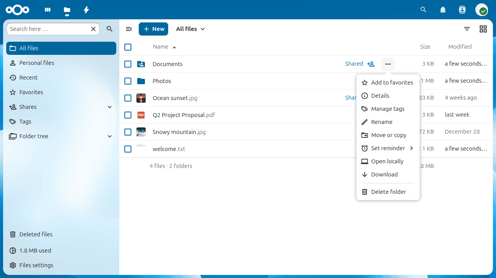
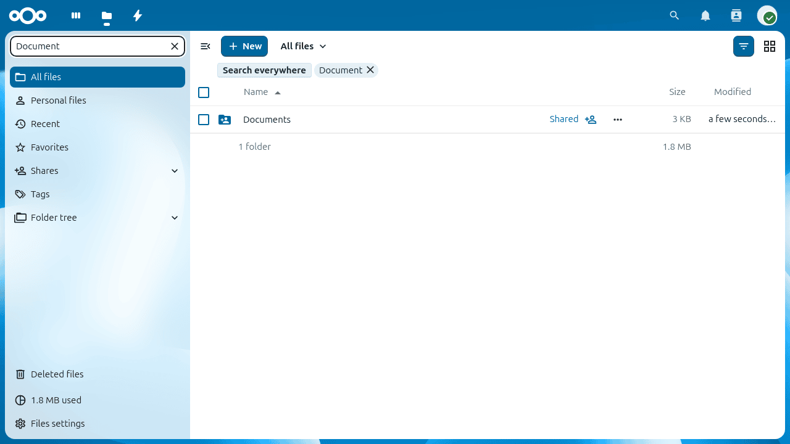
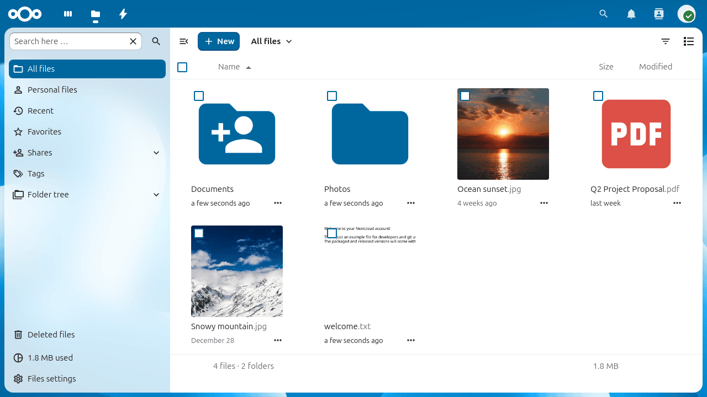
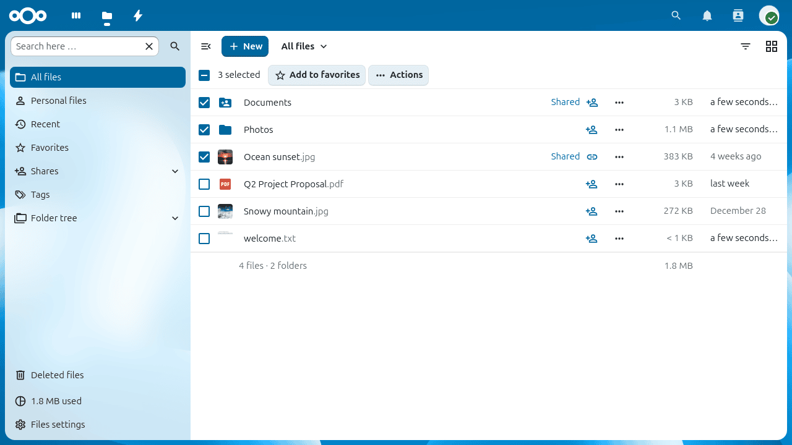

使用 Nextcloud 網頁介面存取檔案
您可以使用 Nextcloud 網頁介面存取您的 Nextcloud 檔案，並創建、預覽、編輯、刪除、共享和重新共享檔案。您的 Nextcloud 管理員可以選擇禁用這些功能，因此如果您的系統中缺少任何功能，請詢問您的伺服器管理員。

檔案控制
Nextcloud 會為圖片、文字檔案及其他支援的檔案類型顯示縮圖預覽。實際支援的類型視乎伺服器設定。
每個檔案和資料夾所在的列都有一個三點操作選單按鈕。按一下便可重新命名、移動、複製、下載或刪除項目，亦可將項目標記為最愛。已標記為最愛的檔案會顯示星號圖示。

Note
使用左側欄的 最愛 項目，即可快速找到所有已標記為最愛的項目。
活動及留言
詳細資料側邊欄中的 活動 分頁按時間順序列出檔案的上載、編輯、共用及留言記錄。你可以直接在此分頁留言。所有有權存取該檔案的人都能看到留言。
搜尋和篩選
使用頁面頂部的搜尋列，可按名稱搜尋所有檔案。要篩選目前檢視的項目，請在左側欄的搜尋欄輸入關鍵字。

格狀檢視
「檔案」應用程式默認採用清單檢視。按一下檔案清單上方的格狀檢視切換按鈕，即可切換為縮圖排列的格狀檢視，方便瀏覽存放圖片的資料夾。

再次按一下按鈕，即可返回清單檢視。
上載和建立檔案
按一下檔案清單上方的 + 按鈕，即可從電腦上載檔案，或在目前的資料夾內建立新項目。
選單提供以下選項。
- 上載檔案
開啟檔案選擇器，讓你從電腦上載一個或多個檔案。你也可以將檔案從檔案管理員直接拖放到檔案清單上。
- 上載資料夾
上載整個資料夾，並保留其結構。
- 新增資料夾
在目前的位置建立空白資料夾。
- 新增文件 / 新增試算表 / 新增簡報
如果管理員已啟用內置的 Nextcloud Text 或 Office 編輯器，你便可以使用該編輯器建立新檔案。
選擇檔案或資料夾
按一下檔案或資料夾左邊的剔選方格，即可選取該項目。要選取目前資料夾內的所有項目，請按一下欄標題中的剔選方格。
選取一個或多個項目後，清單頂部會顯示操作按鈕。你可以一次過刪除或下載所有選取的項目。下載多個項目時，系統會將它們打包成一個 ZIP 壓縮檔。

Note
如果看不到 下載 按鈕，表示管理員已停用此功能。
移動檔案
將任何檔案或資料夾拖放到目的地資料夾，即可移動該項目。你亦可在三點操作選單中選擇 移動或複製，再在對話框中選擇資料夾，以移動或複製項目。
預覽檔案
按一下檔案名稱，即可直接在 Nextcloud 開啟預覽。支援的格式包括圖片、純文字和 PDF。視乎伺服器設定，也可預覽辦公室文件和音訊檔案。如果 Nextcloud 無法預覽某種檔案格式，便會將檔案下載到你的電腦。
視頻播放器
按一下影片檔案，即可直接在 Nextcloud 播放。能否播放視乎瀏覽器及影片的編解碼器。有關相容性資料，請參閱 MDN 支援的媒體格式。